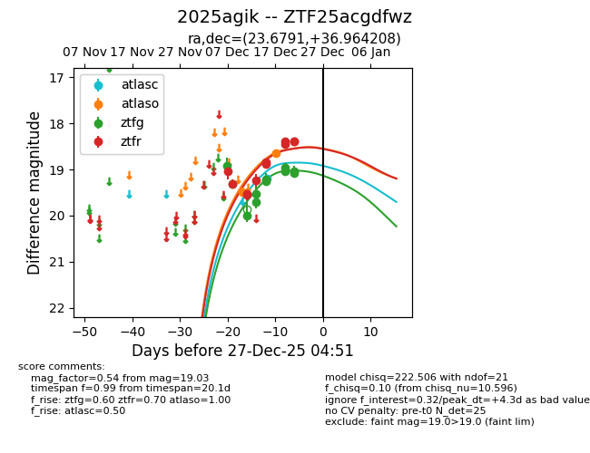
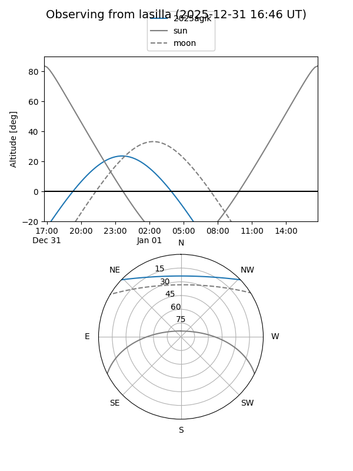
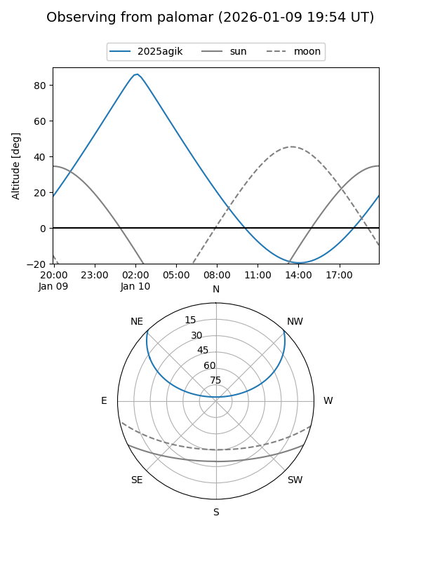
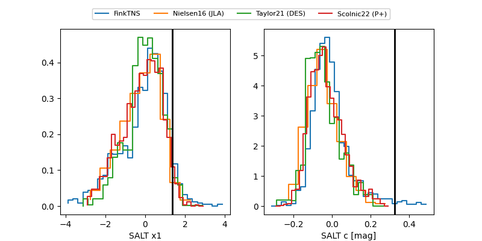

2025agik
Target 2025agik at 2025-12-21 05:58
Aliases and brokers:
FINK: fink-portal.org/ZTF25acgdfwz
Lasair: lasair-ztf.lsst.ac.uk/objects/ZTF25acgdfwz
ALeRCE: alerce.online/object/ZTF25acgdfwz
TNS: wis-tns.org/object/2025agik
YSE: ziggy.ucolick.org/yse/transient_detail/2025agik
alt names
ZTF25acgdfwz (ztf,fink_ztf)
2025agik (tns,yse)
Coordinates:
equatorial (ra, dec) = 23.6791,+36.96421
equatorial (HMS+DMS) = 01:34:42.99,+36:57:51.15
galactic (l, b) = (132.4661,-25.10502)
Flags:
Photometry:
last atlasc=19.19, atlaso=18.64, ztfg=19.03, ztfr=18.38
1 atlasc, 2 atlaso, 11 ztfg, 11 ztfr detections
Lightcurve

Visibility


Additional plots
